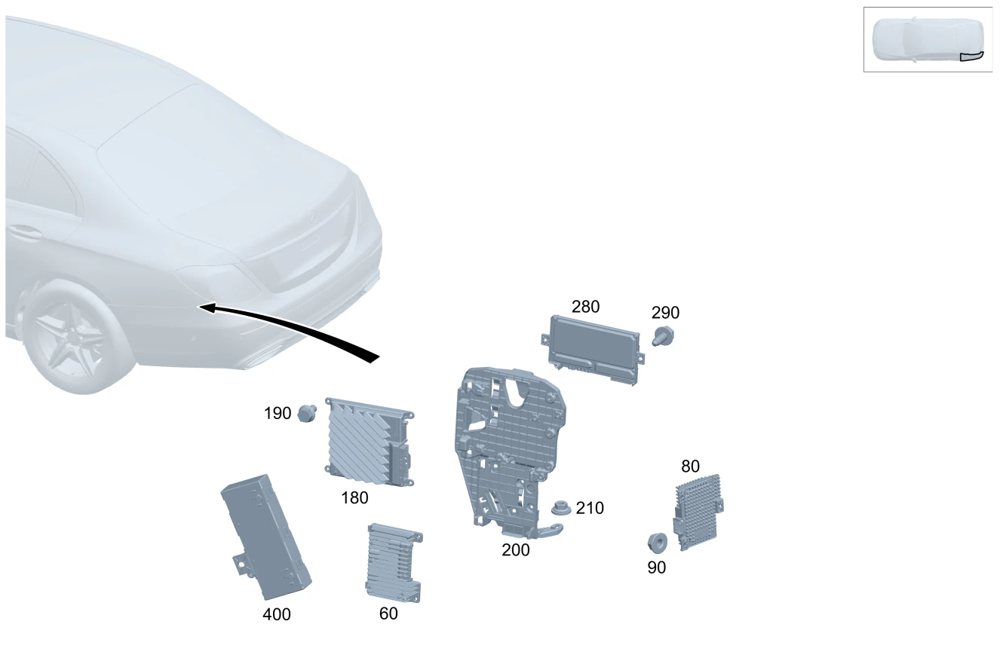

| № | Артикул | Название | Кол. | Примечание | Ограничение |
|---|---|---|---|---|---|
| 60 | A 223 900 72 28 | Блок управления (CONTROL UNIT) | 1 | Интеллектуальное движение [672] ДЕТАЛЬ ПОСЛЕ УСТАН.ПРОВЕРИТЬ НА АКТУАЛЬНОСТЬ "ПРОШИВНОГО" ПО | 233 |
| 60 | A 223 900 04 31 | Блок управления (CONTROL UNIT) | 1 | Интеллектуальное движение [672] ДЕТАЛЬ ПОСЛЕ УСТАН.ПРОВЕРИТЬ НА АКТУАЛЬНОСТЬ "ПРОШИВНОГО" ПО | 803+233 |
| 60 | A 223 900 04 31 | Блок управления (CONTROL UNIT) | 1 | Интеллектуальное движение [672] ДЕТАЛЬ ПОСЛЕ УСТАН.ПРОВЕРИТЬ НА АКТУАЛЬНОСТЬ "ПРОШИВНОГО" ПО | 233 |
| 60 | A 223 900 53 35 | Блок управления (CONTROL UNIT) | 1 | Интеллектуальное движение [672] ДЕТАЛЬ ПОСЛЕ УСТАН.ПРОВЕРИТЬ НА АКТУАЛЬНОСТЬ "ПРОШИВНОГО" ПО | 804+233 |
| 60 | A 223 900 77 38 | Блок управления (CONTROL UNIT) | 1 | Интеллектуальное движение [672] ДЕТАЛЬ ПОСЛЕ УСТАН.ПРОВЕРИТЬ НА АКТУАЛЬНОСТЬ "ПРОШИВНОГО" ПО | 804+233 |
| 60 | A 223 900 77 38 | Блок управления (CONTROL UNIT) | 1 | Интеллектуальное движение [672] ДЕТАЛЬ ПОСЛЕ УСТАН.ПРОВЕРИТЬ НА АКТУАЛЬНОСТЬ "ПРОШИВНОГО" ПО | 233 |
| 60 | A 223 900 54 25 | Блок управления (CONTROL UNIT) | 1 | Интеллектуальное движение [672] ДЕТАЛЬ ПОСЛЕ УСТАН.ПРОВЕРИТЬ НА АКТУАЛЬНОСТЬ "ПРОШИВНОГО" ПО | 233 |
| 60 | A 223 900 34 38 | Блок управления (CONTROL UNIT) | 1 | Интеллектуальное движение [672] ДЕТАЛЬ ПОСЛЕ УСТАН.ПРОВЕРИТЬ НА АКТУАЛЬНОСТЬ "ПРОШИВНОГО" ПО | (804+054/805/806)+233 |
| 60 | A 223 900 34 38 | Блок управления (CONTROL UNIT) | 1 | Интеллектуальное движение [672] ДЕТАЛЬ ПОСЛЕ УСТАН.ПРОВЕРИТЬ НА АКТУАЛЬНОСТЬ "ПРОШИВНОГО" ПО | 233 |
| 60 | A 223 900 11 40 | Блок управления (CONTROL UNIT) | 1 | Интеллектуальное движение [672] ДЕТАЛЬ ПОСЛЕ УСТАН.ПРОВЕРИТЬ НА АКТУАЛЬНОСТЬ "ПРОШИВНОГО" ПО | (805)+233+47U |
| 60 | A 223 900 11 40 | Блок управления (CONTROL UNIT) | 1 | Интеллектуальное движение [672] ДЕТАЛЬ ПОСЛЕ УСТАН.ПРОВЕРИТЬ НА АКТУАЛЬНОСТЬ "ПРОШИВНОГО" ПО | 233+47U |
| 60 | A 223 900 11 40 | Блок управления (CONTROL UNIT) | 1 | Интеллектуальное движение [672] ДЕТАЛЬ ПОСЛЕ УСТАН.ПРОВЕРИТЬ НА АКТУАЛЬНОСТЬ "ПРОШИВНОГО" ПО | (805+055/806)+233+47U |
| 60 | A 223 900 11 40 | Блок управления (CONTROL UNIT) | 1 | Интеллектуальное движение [672] ДЕТАЛЬ ПОСЛЕ УСТАН.ПРОВЕРИТЬ НА АКТУАЛЬНОСТЬ "ПРОШИВНОГО" ПО | (805+055)+233+47U |
| 60 | A 223 900 11 40 | Блок управления (CONTROL UNIT) | 1 | Интеллектуальное движение [672] ДЕТАЛЬ ПОСЛЕ УСТАН.ПРОВЕРИТЬ НА АКТУАЛЬНОСТЬ "ПРОШИВНОГО" ПО | 233+47U |
| 60 | A 223 900 93 44 | Блок управления (CONTROL UNIT) | 1 | Интеллектуальное движение [672] ДЕТАЛЬ ПОСЛЕ УСТАН.ПРОВЕРИТЬ НА АКТУАЛЬНОСТЬ "ПРОШИВНОГО" ПО | (806)+233+47U |
| 60 | A 223 900 17 47 | Блок управления (CONTROL UNIT) | 1 | Интеллектуальное движение [672] ДЕТАЛЬ ПОСЛЕ УСТАН.ПРОВЕРИТЬ НА АКТУАЛЬНОСТЬ "ПРОШИВНОГО" ПО | 233+47U |
| 60 | A 223 900 17 47 | Блок управления (CONTROL UNIT) | 1 | Интеллектуальное движение [672] ДЕТАЛЬ ПОСЛЕ УСТАН.ПРОВЕРИТЬ НА АКТУАЛЬНОСТЬ "ПРОШИВНОГО" ПО | (806+056)+233+47U |
| 60 | A 223 900 17 47 | Блок управления (CONTROL UNIT) | 1 | Интеллектуальное движение [672] ДЕТАЛЬ ПОСЛЕ УСТАН.ПРОВЕРИТЬ НА АКТУАЛЬНОСТЬ "ПРОШИВНОГО" ПО | 233+47U |
| 60 | A 223 900 11 40 | Блок управления (CONTROL UNIT) | 1 | Интеллектуальное движение [672] ДЕТАЛЬ ПОСЛЕ УСТАН.ПРОВЕРИТЬ НА АКТУАЛЬНОСТЬ "ПРОШИВНОГО" ПО | 233+47U |
| 60 | A 223 900 07 54 | Блок управления (CONTROL UNIT) | 1 | Интеллектуальное движение [672] ДЕТАЛЬ ПОСЛЕ УСТАН.ПРОВЕРИТЬ НА АКТУАЛЬНОСТЬ "ПРОШИВНОГО" ПО | 233+47U |
| 60 | A 000 900 11 52 | Блок управления | 1 | Интеллектуальное движение [672] ДЕТАЛЬ ПОСЛЕ УСТАН.ПРОВЕРИТЬ НА АКТУАЛЬНОСТЬ "ПРОШИВНОГО" ПО | (807/808)+4B1 |
| 60 | A 000 900 19 57 | Блок управления | 1 | Интеллектуальное движение [672] ДЕТАЛЬ ПОСЛЕ УСТАН.ПРОВЕРИТЬ НА АКТУАЛЬНОСТЬ "ПРОШИВНОГО" ПО | 4B1+830+(807/808) |
| 60 | A 000 900 99 59 | Блок управления (CONTROL UNIT) | 1 | Интеллектуальное движение [672] ДЕТАЛЬ ПОСЛЕ УСТАН.ПРОВЕРИТЬ НА АКТУАЛЬНОСТЬ "ПРОШИВНОГО" ПО | 4B1+830+(807) |
| 60 | A 000 900 94 58 | Блок управления (CONTROL UNIT) | 1 | Интеллектуальное движение [672] ДЕТАЛЬ ПОСЛЕ УСТАН.ПРОВЕРИТЬ НА АКТУАЛЬНОСТЬ "ПРОШИВНОГО" ПО | 4B1+830+(807) |
| 80 | A 223 900 36 18 | Блок управления (CONTROL UNIT) | 1 | Датчик движения [672] ДЕТАЛЬ ПОСЛЕ УСТАН.ПРОВЕРИТЬ НА АКТУАЛЬНОСТЬ "ПРОШИВНОГО" ПО | 77B |
| 90 | N 000000 008290 | Шестигранная гайка (HEXAGON NUT) | 3 | Крепление блока управления; M6 | 77B |
| 180 | A 223 900 04 25 | Блок управления (CONTROL UNIT) | 1 | Усилитель акустической системы [672] ДЕТАЛЬ ПОСЛЕ УСТАН.ПРОВЕРИТЬ НА АКТУАЛЬНОСТЬ "ПРОШИВНОГО" ПО | 810 |
| 180 | A 223 900 39 30 | Блок управления (CONTROL UNIT) | 1 | Усилитель акустической системы [672] ДЕТАЛЬ ПОСЛЕ УСТАН.ПРОВЕРИТЬ НА АКТУАЛЬНОСТЬ "ПРОШИВНОГО" ПО | 810 |
| 180 | A 223 900 28 31 | Блок управления (CONTROL UNIT) | 1 | Усилитель акустической системы [672] ДЕТАЛЬ ПОСЛЕ УСТАН.ПРОВЕРИТЬ НА АКТУАЛЬНОСТЬ "ПРОШИВНОГО" ПО | 810 |
| 180 | A 236 900 79 03 | Блок управления (CONTROL UNIT) | 1 | Усилитель акустической системы [672] ДЕТАЛЬ ПОСЛЕ УСТАН.ПРОВЕРИТЬ НА АКТУАЛЬНОСТЬ "ПРОШИВНОГО" ПО | 810+(805/806) |
| 180 | A 236 900 79 03 | Блок управления (CONTROL UNIT) | 1 | Усилитель акустической системы [672] ДЕТАЛЬ ПОСЛЕ УСТАН.ПРОВЕРИТЬ НА АКТУАЛЬНОСТЬ "ПРОШИВНОГО" ПО | 810 |
| 180 | A 223 900 87 46 | Блок управления (CONTROL UNIT) | 1 | Усилитель акустической системы [672] ДЕТАЛЬ ПОСЛЕ УСТАН.ПРОВЕРИТЬ НА АКТУАЛЬНОСТЬ "ПРОШИВНОГО" ПО | 807/808 |
| 180 | A 223 900 43 49 | Блок управления (CONTROL UNIT) | 1 | Усилитель акустической системы [672] ДЕТАЛЬ ПОСЛЕ УСТАН.ПРОВЕРИТЬ НА АКТУАЛЬНОСТЬ "ПРОШИВНОГО" ПО | 807/808 |
| 180 | A 223 900 89 46 | Блок управления (CONTROL UNIT) | 1 | Усилитель акустической системы [672] ДЕТАЛЬ ПОСЛЕ УСТАН.ПРОВЕРИТЬ НА АКТУАЛЬНОСТЬ "ПРОШИВНОГО" ПО | 810+(807/808) |
| 180 | A 223 900 45 49 | Блок управления (CONTROL UNIT) | 1 | Усилитель акустической системы [672] ДЕТАЛЬ ПОСЛЕ УСТАН.ПРОВЕРИТЬ НА АКТУАЛЬНОСТЬ "ПРОШИВНОГО" ПО | 810+(807/808) |
| 180 | A 223 900 90 46 | Блок управления | 1 | Усилитель акустической системы [672] ДЕТАЛЬ ПОСЛЕ УСТАН.ПРОВЕРИТЬ НА АКТУАЛЬНОСТЬ "ПРОШИВНОГО" ПО | 810+B53+(807/808) |
| 180 | A 223 900 46 49 | Блок управления (CONTROL UNIT) | 1 | Усилитель акустической системы [672] ДЕТАЛЬ ПОСЛЕ УСТАН.ПРОВЕРИТЬ НА АКТУАЛЬНОСТЬ "ПРОШИВНОГО" ПО | 810+B53+(807/808) |
| 190 | N 910143 006000 | Винт с 6-гр. глвк (HEXALOBULAR SCREW) | 2 | Крепление блока управления; M6X12 | 810/M139+M20 |
| 190 | N 910143 006000 | Винт с 6-гр. глвк (HEXALOBULAR SCREW) | 2 | Крепление блока управления; M6X12 | 810/M139/M139+(853/810) |
| 190 | N 000000 008923 | Винт с 6-гранной головкой (HEXAGON HEAD BOLT) | 2 | Болт усилителя акустической системы; M6X20 | 807/808/(807/808)+(810/B53) |
| 200 | A 206 545 10 00 | Держатель (HOLDER) | 1 | Блок управления | 810/853/235/881/233/M139/M139+(853/810) |
| 200 | A 206 545 10 00 | Держатель (HOLDER) | 1 | Блок управления | 810/853/235/881/233/M139/M139+(853/810) |
| 200 | A 206 540 62 77 | Держатель (HOLDER) | 1 | Кронштейн \- усилитель акустической системы | (807/808) |
| 210 | N 000000 008293 | ГАЙКА КОМБИНИРОВАННАЯ (NUT-AND-WASHER ASSEMBLY) | 2 | Крепление держателя; M6 | 810/853/235/881/894/233/M139/M139+(853/810) |
| 210 | A 001 990 70 52 | Накидная гайка (DOMED CAP NUT) | 2 | Крепление держателя; M6 | 810/853/235/881/894/233/M139/M139+(853/810)/ME10 |
| 210 | A 001 990 70 52 | Накидная гайка (DOMED CAP NUT) | 2 | Крепление держателя; M6 | 700+(810/853/235/881/894/233/M139/M139+(853/810)/ME10) |
| 210 | A 001 990 70 52 | Накидная гайка (DOMED CAP NUT) | 1 | Гайка кронштейна \- усилитель акустической системы; M6 | (165/700)+(807/808) |
| 280 | A 000 900 50 39 | Блок управления (CONTROL UNIT) | 1 | Парковочная система [672] ДЕТАЛЬ ПОСЛЕ УСТАН.ПРОВЕРИТЬ НА АКТУАЛЬНОСТЬ "ПРОШИВНОГО" ПО | 235+218 |
| 280 | A 000 900 07 33 | Блок управления | 1 | Парковочная система [672] ДЕТАЛЬ ПОСЛЕ УСТАН.ПРОВЕРИТЬ НА АКТУАЛЬНОСТЬ "ПРОШИВНОГО" ПО | 235+218 |
| 280 | A 000 900 63 35 | Блок управления (CONTROL UNIT) | 1 | Парковочная система [672] ДЕТАЛЬ ПОСЛЕ УСТАН.ПРОВЕРИТЬ НА АКТУАЛЬНОСТЬ "ПРОШИВНОГО" ПО | 235+218 |
| 280 | A 000 900 84 35 | Блок управления | 1 | Парковочная система [672] ДЕТАЛЬ ПОСЛЕ УСТАН.ПРОВЕРИТЬ НА АКТУАЛЬНОСТЬ "ПРОШИВНОГО" ПО | 803+235+218 |
| 280 | A 000 900 59 37 | Блок управления (CONTROL UNIT) | 1 | Парковочная система [672] ДЕТАЛЬ ПОСЛЕ УСТАН.ПРОВЕРИТЬ НА АКТУАЛЬНОСТЬ "ПРОШИВНОГО" ПО | 803+235+218 |
| 280 | A 000 900 55 43 | Блок управления (CONTROL UNIT) | 1 | Парковочная система [672] ДЕТАЛЬ ПОСЛЕ УСТАН.ПРОВЕРИТЬ НА АКТУАЛЬНОСТЬ "ПРОШИВНОГО" ПО | 803+235+218 |
| 280 | A 000 900 55 43 | Блок управления (CONTROL UNIT) | 1 | Парковочная система [672] ДЕТАЛЬ ПОСЛЕ УСТАН.ПРОВЕРИТЬ НА АКТУАЛЬНОСТЬ "ПРОШИВНОГО" ПО | 235+218 |
| 280 | A 000 900 95 44 | Блок управления (CONTROL UNIT) | 1 | Парковочная система [672] ДЕТАЛЬ ПОСЛЕ УСТАН.ПРОВЕРИТЬ НА АКТУАЛЬНОСТЬ "ПРОШИВНОГО" ПО | (803+053)+235+218 |
| 280 | A 000 900 95 44 | Блок управления (CONTROL UNIT) | 1 | Парковочная система [672] ДЕТАЛЬ ПОСЛЕ УСТАН.ПРОВЕРИТЬ НА АКТУАЛЬНОСТЬ "ПРОШИВНОГО" ПО | 235+218 |
| 280 | A 000 900 09 46 | Блок управления (CONTROL UNIT) | 1 | Парковочная система [672] ДЕТАЛЬ ПОСЛЕ УСТАН.ПРОВЕРИТЬ НА АКТУАЛЬНОСТЬ "ПРОШИВНОГО" ПО | 804+235+218 |
| 280 | A 000 900 09 46 | Блок управления (CONTROL UNIT) | 1 | Парковочная система [672] ДЕТАЛЬ ПОСЛЕ УСТАН.ПРОВЕРИТЬ НА АКТУАЛЬНОСТЬ "ПРОШИВНОГО" ПО | 235+218 |
| 280 | A 206 900 90 16 | Блок управления (CONTROL UNIT) | 1 | Парковочная система [672] ДЕТАЛЬ ПОСЛЕ УСТАН.ПРОВЕРИТЬ НА АКТУАЛЬНОСТЬ "ПРОШИВНОГО" ПО | 235+501 |
| 280 | A 000 900 95 44 | Блок управления (CONTROL UNIT) | 1 | Парковочная система [672] ДЕТАЛЬ ПОСЛЕ УСТАН.ПРОВЕРИТЬ НА АКТУАЛЬНОСТЬ "ПРОШИВНОГО" ПО | 804+235+218 |
| 280 | A 000 900 39 49 | Блок управления (CONTROL UNIT) | 1 | Парковочная система [672] ДЕТАЛЬ ПОСЛЕ УСТАН.ПРОВЕРИТЬ НА АКТУАЛЬНОСТЬ "ПРОШИВНОГО" ПО | 235+218 |
| 280 | A 000 900 16 47 | Блок управления (CONTROL UNIT) | 1 | Парковочная система [672] ДЕТАЛЬ ПОСЛЕ УСТАН.ПРОВЕРИТЬ НА АКТУАЛЬНОСТЬ "ПРОШИВНОГО" ПО | (804+054/805/806)+235+218 |
| 280 | A 000 900 16 47 | Блок управления (CONTROL UNIT) | 1 | Парковочная система [672] ДЕТАЛЬ ПОСЛЕ УСТАН.ПРОВЕРИТЬ НА АКТУАЛЬНОСТЬ "ПРОШИВНОГО" ПО | 235+218 |
| 280 | A 206 900 99 12 | Блок управления | 1 | Парковочная система [672] ДЕТАЛЬ ПОСЛЕ УСТАН.ПРОВЕРИТЬ НА АКТУАЛЬНОСТЬ "ПРОШИВНОГО" ПО | 235+501 |
| 280 | A 206 900 48 15 | Блок управления (CONTROL UNIT) | 1 | Парковочная система [672] ДЕТАЛЬ ПОСЛЕ УСТАН.ПРОВЕРИТЬ НА АКТУАЛЬНОСТЬ "ПРОШИВНОГО" ПО | 235+501 |
| 280 | A 000 900 02 35 | Блок управления (CONTROL UNIT) | 1 | Парковочная система [672] ДЕТАЛЬ ПОСЛЕ УСТАН.ПРОВЕРИТЬ НА АКТУАЛЬНОСТЬ "ПРОШИВНОГО" ПО | 803+235+501 |
| 280 | A 000 900 25 38 | Блок управления (CONTROL UNIT) | 1 | Парковочная система [672] ДЕТАЛЬ ПОСЛЕ УСТАН.ПРОВЕРИТЬ НА АКТУАЛЬНОСТЬ "ПРОШИВНОГО" ПО | 803+235+501 |
| 280 | A 000 900 02 43 | Блок управления (CONTROL UNIT) | 1 | Парковочная система [672] ДЕТАЛЬ ПОСЛЕ УСТАН.ПРОВЕРИТЬ НА АКТУАЛЬНОСТЬ "ПРОШИВНОГО" ПО | 803+235+501 |
| 280 | A 000 900 02 43 | Блок управления (CONTROL UNIT) | 1 | Парковочная система [672] ДЕТАЛЬ ПОСЛЕ УСТАН.ПРОВЕРИТЬ НА АКТУАЛЬНОСТЬ "ПРОШИВНОГО" ПО | 235+501 |
| 280 | A 000 900 97 44 | Блок управления (CONTROL UNIT) | 1 | Парковочная система [672] ДЕТАЛЬ ПОСЛЕ УСТАН.ПРОВЕРИТЬ НА АКТУАЛЬНОСТЬ "ПРОШИВНОГО" ПО | (803+053)+235+501 |
| 280 | A 000 900 97 44 | Блок управления (CONTROL UNIT) | 1 | Парковочная система [672] ДЕТАЛЬ ПОСЛЕ УСТАН.ПРОВЕРИТЬ НА АКТУАЛЬНОСТЬ "ПРОШИВНОГО" ПО | 235+501 |
| 280 | A 000 900 14 46 | Блок управления (CONTROL UNIT) | 1 | Парковочная система [672] ДЕТАЛЬ ПОСЛЕ УСТАН.ПРОВЕРИТЬ НА АКТУАЛЬНОСТЬ "ПРОШИВНОГО" ПО | 804+235+501 |
| 280 | A 000 900 14 46 | Блок управления (CONTROL UNIT) | 1 | Парковочная система [672] ДЕТАЛЬ ПОСЛЕ УСТАН.ПРОВЕРИТЬ НА АКТУАЛЬНОСТЬ "ПРОШИВНОГО" ПО | 235+501 |
| 280 | A 000 900 97 44 | Блок управления (CONTROL UNIT) | 1 | Парковочная система [672] ДЕТАЛЬ ПОСЛЕ УСТАН.ПРОВЕРИТЬ НА АКТУАЛЬНОСТЬ "ПРОШИВНОГО" ПО | 804+235+501 |
| 280 | A 000 900 63 49 | Блок управления (CONTROL UNIT) | 1 | Парковочная система [672] ДЕТАЛЬ ПОСЛЕ УСТАН.ПРОВЕРИТЬ НА АКТУАЛЬНОСТЬ "ПРОШИВНОГО" ПО | 235+501 |
| 280 | A 000 900 18 47 | Блок управления (CONTROL UNIT) | 1 | Парковочная система [672] ДЕТАЛЬ ПОСЛЕ УСТАН.ПРОВЕРИТЬ НА АКТУАЛЬНОСТЬ "ПРОШИВНОГО" ПО | (804+054/805/806)+235+501 |
| 280 | A 000 900 18 47 | Блок управления (CONTROL UNIT) | 1 | Парковочная система [672] ДЕТАЛЬ ПОСЛЕ УСТАН.ПРОВЕРИТЬ НА АКТУАЛЬНОСТЬ "ПРОШИВНОГО" ПО | 235+501 |
| 280 | A 000 900 22 54 | Блок управления (CONTROL UNIT) | 1 | Парковочная система [672] ДЕТАЛЬ ПОСЛЕ УСТАН.ПРОВЕРИТЬ НА АКТУАЛЬНОСТЬ "ПРОШИВНОГО" ПО | (805/806)+235+501 |
| 280 | A 000 900 22 54 | Блок управления (CONTROL UNIT) | 1 | Парковочная система [672] ДЕТАЛЬ ПОСЛЕ УСТАН.ПРОВЕРИТЬ НА АКТУАЛЬНОСТЬ "ПРОШИВНОГО" ПО | 235+501 |
| 280 | A 000 900 30 49 | Блок управления (CONTROL UNIT) | 1 | Парковочная система [672] ДЕТАЛЬ ПОСЛЕ УСТАН.ПРОВЕРИТЬ НА АКТУАЛЬНОСТЬ "ПРОШИВНОГО" ПО | (805/806)+235+501 |
| 280 | A 000 900 66 53 | Блок управления (CONTROL UNIT) | 1 | Парковочная система [672] ДЕТАЛЬ ПОСЛЕ УСТАН.ПРОВЕРИТЬ НА АКТУАЛЬНОСТЬ "ПРОШИВНОГО" ПО | (805+055/806)+235+501 |
| 280 | A 000 900 66 53 | Блок управления (CONTROL UNIT) | 1 | Парковочная система [672] ДЕТАЛЬ ПОСЛЕ УСТАН.ПРОВЕРИТЬ НА АКТУАЛЬНОСТЬ "ПРОШИВНОГО" ПО | 235+501 |
| 280 | A 000 900 03 35 | Блок управления (CONTROL UNIT) | 1 | Парковочная система [672] ДЕТАЛЬ ПОСЛЕ УСТАН.ПРОВЕРИТЬ НА АКТУАЛЬНОСТЬ "ПРОШИВНОГО" ПО | 235+501+507+(803/804/805/806) |
| 280 | A 000 900 01 45 | Блок управления (CONTROL UNIT) | 1 | Парковочная система [672] ДЕТАЛЬ ПОСЛЕ УСТАН.ПРОВЕРИТЬ НА АКТУАЛЬНОСТЬ "ПРОШИВНОГО" ПО | 235+501+507+(803+053) |
| 280 | A 000 900 01 45 | Блок управления (CONTROL UNIT) | 1 | Парковочная система [672] ДЕТАЛЬ ПОСЛЕ УСТАН.ПРОВЕРИТЬ НА АКТУАЛЬНОСТЬ "ПРОШИВНОГО" ПО | 235+501+507 |
| 280 | A 000 900 18 46 | Блок управления (CONTROL UNIT) | 1 | Парковочная система [672] ДЕТАЛЬ ПОСЛЕ УСТАН.ПРОВЕРИТЬ НА АКТУАЛЬНОСТЬ "ПРОШИВНОГО" ПО | 235+501+507+804 |
| 280 | A 000 900 18 46 | Блок управления (CONTROL UNIT) | 1 | Парковочная система [672] ДЕТАЛЬ ПОСЛЕ УСТАН.ПРОВЕРИТЬ НА АКТУАЛЬНОСТЬ "ПРОШИВНОГО" ПО | 235+501+507 |
| 280 | A 000 900 01 45 | Блок управления (CONTROL UNIT) | 1 | Парковочная система [672] ДЕТАЛЬ ПОСЛЕ УСТАН.ПРОВЕРИТЬ НА АКТУАЛЬНОСТЬ "ПРОШИВНОГО" ПО | 235+501+507+804 |
| 280 | A 000 900 32 47 | Блок управления (CONTROL UNIT) | 1 | Парковочная система [672] ДЕТАЛЬ ПОСЛЕ УСТАН.ПРОВЕРИТЬ НА АКТУАЛЬНОСТЬ "ПРОШИВНОГО" ПО | 235+501+507 |
| 290 | N 910105 006023 | Винт с 6-гранной головкой (HEXAGON HEAD BOLT) | 1 | Крепление блока управления; M6X16 | 235 |
| 400 | A 223 900 67 21 | Блок управления (CONTROL UNIT) | 1 | Дистанционное закрывание крышки багажника [672] ДЕТАЛЬ ПОСЛЕ УСТАН.ПРОВЕРИТЬ НА АКТУАЛЬНОСТЬ "ПРОШИВНОГО" ПО | 881 |
| 400 | A 223 900 35 30 | Блок управления (CONTROL UNIT) | 1 | Дистанционное закрывание крышки багажника [672] ДЕТАЛЬ ПОСЛЕ УСТАН.ПРОВЕРИТЬ НА АКТУАЛЬНОСТЬ "ПРОШИВНОГО" ПО | 881 |
| 400 | A 223 900 88 30 | Блок управления (CONTROL UNIT) | 1 | Дистанционное закрывание крышки багажника [672] ДЕТАЛЬ ПОСЛЕ УСТАН.ПРОВЕРИТЬ НА АКТУАЛЬНОСТЬ "ПРОШИВНОГО" ПО | 881 |
| 400 | A 223 900 75 38 | Блок управления (CONTROL UNIT) | 1 | Дистанционное закрывание крышки багажника [672] ДЕТАЛЬ ПОСЛЕ УСТАН.ПРОВЕРИТЬ НА АКТУАЛЬНОСТЬ "ПРОШИВНОГО" ПО | 881 |
| 400 | A 223 900 75 38 | Блок управления (CONTROL UNIT) | 1 | Дистанционное закрывание крышки багажника [672] ДЕТАЛЬ ПОСЛЕ УСТАН.ПРОВЕРИТЬ НА АКТУАЛЬНОСТЬ "ПРОШИВНОГО" ПО | 807+881 |
| 1000 | A 223 900 84 03 | Блок управления (CONTROL UNIT) | 1 | Акустический генератор [672] ДЕТАЛЬ ПОСЛЕ УСТАН.ПРОВЕРИТЬ НА АКТУАЛЬНОСТЬ "ПРОШИВНОГО" ПО | B53 |
| 1000 | A 297 900 14 11 | Блок управления (CONTROL UNIT) | 1 | Акустический генератор [672] ДЕТАЛЬ ПОСЛЕ УСТАН.ПРОВЕРИТЬ НА АКТУАЛЬНОСТЬ "ПРОШИВНОГО" ПО | B53 |
| 1000 | A 294 900 49 00 | Блок управления (CONTROL UNIT) | 1 | Акустический генератор [672] ДЕТАЛЬ ПОСЛЕ УСТАН.ПРОВЕРИТЬ НА АКТУАЛЬНОСТЬ "ПРОШИВНОГО" ПО | B53+(803+053/804/805/806) |
| 1000 | A 294 900 49 00 | Блок управления (CONTROL UNIT) | 1 | Акустический генератор [672] ДЕТАЛЬ ПОСЛЕ УСТАН.ПРОВЕРИТЬ НА АКТУАЛЬНОСТЬ "ПРОШИВНОГО" ПО | B53 |
| 1000 | A 223 900 23 43 | Блок управления (CONTROL UNIT) | 1 | Акустический генератор [672] ДЕТАЛЬ ПОСЛЕ УСТАН.ПРОВЕРИТЬ НА АКТУАЛЬНОСТЬ "ПРОШИВНОГО" ПО | B53+806 |
| 1000 | A 223 900 23 43 | Блок управления (CONTROL UNIT) | 1 | Акустический генератор [672] ДЕТАЛЬ ПОСЛЕ УСТАН.ПРОВЕРИТЬ НА АКТУАЛЬНОСТЬ "ПРОШИВНОГО" ПО | B53 |
| 1010 | A 206 545 20 00 | Держатель (HOLDER) | 1 | Блок управления | B53 |
| 1020 | A 000 990 43 62 | Пластмассовая гайка (PLASTIC NUT) | 3 | Крепление блока управления | B53 |
| 1020 | A 000 990 43 62 | Пластмассовая гайка (PLASTIC NUT) | 3 | Крепление блока управления | B53 |
| 1500 | A 206 900 04 14 | Блок управления (CONTROL UNIT) | 1 | Коммуникационный модуль телекоммуникационной службы [672] ДЕТАЛЬ ПОСЛЕ УСТАН.ПРОВЕРИТЬ НА АКТУАЛЬНОСТЬ "ПРОШИВНОГО" ПО | 384+1B5 |
| 1500 | A 206 900 87 14 | Блок управления | 1 | Коммуникационный модуль телекоммуникационной службы [672] ДЕТАЛЬ ПОСЛЕ УСТАН.ПРОВЕРИТЬ НА АКТУАЛЬНОСТЬ "ПРОШИВНОГО" ПО | 384+1B5 |
| 1500 | A 206 900 34 16 | Блок управления | 1 | Коммуникационный модуль телекоммуникационной службы [672] ДЕТАЛЬ ПОСЛЕ УСТАН.ПРОВЕРИТЬ НА АКТУАЛЬНОСТЬ "ПРОШИВНОГО" ПО | 384+1B5 |
| 1500 | A 206 900 89 16 | Блок управления (CONTROL UNIT) | 1 | Коммуникационный модуль телекоммуникационной службы [672] ДЕТАЛЬ ПОСЛЕ УСТАН.ПРОВЕРИТЬ НА АКТУАЛЬНОСТЬ "ПРОШИВНОГО" ПО | 384+1B5 |
| 1500 | A 206 900 27 18 | Блок управления (CONTROL UNIT) | 1 | Коммуникационный модуль телекоммуникационной службы [672] ДЕТАЛЬ ПОСЛЕ УСТАН.ПРОВЕРИТЬ НА АКТУАЛЬНОСТЬ "ПРОШИВНОГО" ПО | 384+1B5 |
| 1500 | A 206 900 91 19 | Блок управления | 1 | Коммуникационный модуль телекоммуникационной службы [672] ДЕТАЛЬ ПОСЛЕ УСТАН.ПРОВЕРИТЬ НА АКТУАЛЬНОСТЬ "ПРОШИВНОГО" ПО | 384+1B5+(803+053/804) |
| 1500 | A 206 900 77 20 | Блок управления (CONTROL UNIT) | 1 | Коммуникационный модуль телекоммуникационной службы [672] ДЕТАЛЬ ПОСЛЕ УСТАН.ПРОВЕРИТЬ НА АКТУАЛЬНОСТЬ "ПРОШИВНОГО" ПО | 384+1B5 |
| 1500 | A 206 900 76 20 | Блок управления (CONTROL UNIT) | 1 | Коммуникационный модуль телекоммуникационной службы [672] ДЕТАЛЬ ПОСЛЕ УСТАН.ПРОВЕРИТЬ НА АКТУАЛЬНОСТЬ "ПРОШИВНОГО" ПО | 384+1B5+(803+053/804) |
| 1500 | A 206 900 76 20 | Блок управления (CONTROL UNIT) | 1 | Коммуникационный модуль телекоммуникационной службы [672] ДЕТАЛЬ ПОСЛЕ УСТАН.ПРОВЕРИТЬ НА АКТУАЛЬНОСТЬ "ПРОШИВНОГО" ПО | 384+1B5 |
| 1500 | A 206 900 76 20 | Блок управления (CONTROL UNIT) | 1 | Коммуникационный модуль телекоммуникационной службы [672] ДЕТАЛЬ ПОСЛЕ УСТАН.ПРОВЕРИТЬ НА АКТУАЛЬНОСТЬ "ПРОШИВНОГО" ПО | 384+1B5 |
| 1500 | A 206 900 96 22 | Блок управления (CONTROL UNIT) | 1 | Коммуникационный модуль телекоммуникационной службы [672] ДЕТАЛЬ ПОСЛЕ УСТАН.ПРОВЕРИТЬ НА АКТУАЛЬНОСТЬ "ПРОШИВНОГО" ПО | 384+1B5+804+054 |
| 1500 | A 206 900 96 22 | Блок управления (CONTROL UNIT) | 1 | Коммуникационный модуль телекоммуникационной службы [672] ДЕТАЛЬ ПОСЛЕ УСТАН.ПРОВЕРИТЬ НА АКТУАЛЬНОСТЬ "ПРОШИВНОГО" ПО | 384+1B5 |
| 1500 | A 214 900 15 11 | Блок управления (CONTROL UNIT) | 1 | Коммуникационный модуль телекоммуникационной службы [672] ДЕТАЛЬ ПОСЛЕ УСТАН.ПРОВЕРИТЬ НА АКТУАЛЬНОСТЬ "ПРОШИВНОГО" ПО | 382+1B5+(805/806/807) |
| 1500 | A 214 900 59 16 | Блок управления (CONTROL UNIT) | 1 | Коммуникационный модуль телекоммуникационной службы [672] ДЕТАЛЬ ПОСЛЕ УСТАН.ПРОВЕРИТЬ НА АКТУАЛЬНОСТЬ "ПРОШИВНОГО" ПО | 382+1B5+(805/806) |
| 1500 | A 214 900 64 18 | Блок управления (CONTROL UNIT) | 1 | Коммуникационный модуль телекоммуникационной службы [672] ДЕТАЛЬ ПОСЛЕ УСТАН.ПРОВЕРИТЬ НА АКТУАЛЬНОСТЬ "ПРОШИВНОГО" ПО | 382+1B5+(805/806) |
| 1500 | A 214 900 64 18 | Блок управления (CONTROL UNIT) | 1 | Коммуникационный модуль телекоммуникационной службы [672] ДЕТАЛЬ ПОСЛЕ УСТАН.ПРОВЕРИТЬ НА АКТУАЛЬНОСТЬ "ПРОШИВНОГО" ПО | 382+1B5 |
| 1500 | A 214 900 66 16 | Блок управления (CONTROL UNIT) | 1 | Коммуникационный модуль телекоммуникационной службы [672] ДЕТАЛЬ ПОСЛЕ УСТАН.ПРОВЕРИТЬ НА АКТУАЛЬНОСТЬ "ПРОШИВНОГО" ПО | 382+1B5 |
| 1500 | A 214 900 02 21 | Блок управления (CONTROL UNIT) | 1 | Коммуникационный модуль телекоммуникационной службы [672] ДЕТАЛЬ ПОСЛЕ УСТАН.ПРОВЕРИТЬ НА АКТУАЛЬНОСТЬ "ПРОШИВНОГО" ПО | 382+1B5 |
| 1500 | A 214 900 03 21 | Блок управления | 1 | Коммуникационный модуль телекоммуникационной службы [672] ДЕТАЛЬ ПОСЛЕ УСТАН.ПРОВЕРИТЬ НА АКТУАЛЬНОСТЬ "ПРОШИВНОГО" ПО | 382+1B5+692+(807/808) |
| 1500 | A 214 900 97 20 | Блок управления | 1 | Коммуникационный модуль телекоммуникационной службы [672] ДЕТАЛЬ ПОСЛЕ УСТАН.ПРОВЕРИТЬ НА АКТУАЛЬНОСТЬ "ПРОШИВНОГО" ПО | 382+1B5+692+(807/808) |
| 1500 | A 214 900 86 24 | Блок управления (CONTROL UNIT) | 1 | Коммуникационный модуль телекоммуникационной службы [672] ДЕТАЛЬ ПОСЛЕ УСТАН.ПРОВЕРИТЬ НА АКТУАЛЬНОСТЬ "ПРОШИВНОГО" ПО | 382+1B5+692+(807/808) |
| 1510 | N 000000 008354 | FILLISTER HD SCREW (FILLISTER HEAD SCREW) | 2 | Крепление блока управления | 383/384 |
| 1510 | N 000000 008354 | FILLISTER HD SCREW (FILLISTER HEAD SCREW) | 2 | Крепление блока управления | 382/383/384 |
| 1510 | N 000000 008354 | FILLISTER HD SCREW (FILLISTER HEAD SCREW) | 2 | Крепление блока управления | 382 |
| 1520 | A 000 998 92 04 | Закладная гайка (SPREADER NUT) | 2 | Крепление блока управления | 383/384 |
| 1520 | A 000 998 92 04 | Закладная гайка (SPREADER NUT) | 2 | Крепление блока управления | 382/383/384 |
| 1520 | A 000 998 92 04 | Закладная гайка (SPREADER NUT) | 2 | Крепление блока управления | 382 |
| 2120 | A 206 900 04 15 | Блок управления (CONTROL UNIT) | 1 | Модуль обработки сигналов и управления сзади [672] ДЕТАЛЬ ПОСЛЕ УСТАН.ПРОВЕРИТЬ НА АКТУАЛЬНОСТЬ "ПРОШИВНОГО" ПО | |
| 2120 | A 206 900 04 15 | Блок управления (CONTROL UNIT) | 1 | Модуль обработки сигналов и управления сзади [672] ДЕТАЛЬ ПОСЛЕ УСТАН.ПРОВЕРИТЬ НА АКТУАЛЬНОСТЬ "ПРОШИВНОГО" ПО | |
| 2120 | A 206 900 27 11 | Блок управления | 1 | Модуль обработки сигналов и управления сзади [672] ДЕТАЛЬ ПОСЛЕ УСТАН.ПРОВЕРИТЬ НА АКТУАЛЬНОСТЬ "ПРОШИВНОГО" ПО | 803 |
| 2120 | A 206 900 18 18 | Блок управления (CONTROL UNIT) | 1 | Модуль обработки сигналов и управления сзади [672] ДЕТАЛЬ ПОСЛЕ УСТАН.ПРОВЕРИТЬ НА АКТУАЛЬНОСТЬ "ПРОШИВНОГО" ПО | 803 |
| 2120 | A 206 900 19 18 | Блок управления (CONTROL UNIT) | 1 | Модуль обработки сигналов и управления сзади [672] ДЕТАЛЬ ПОСЛЕ УСТАН.ПРОВЕРИТЬ НА АКТУАЛЬНОСТЬ "ПРОШИВНОГО" ПО | |
| 2120 | A 206 900 28 11 | Блок управления | 1 | Модуль обработки сигналов и управления сзади [672] ДЕТАЛЬ ПОСЛЕ УСТАН.ПРОВЕРИТЬ НА АКТУАЛЬНОСТЬ "ПРОШИВНОГО" ПО | 803+881 |
| 2120 | A 206 900 19 18 | Блок управления (CONTROL UNIT) | 1 | Модуль обработки сигналов и управления сзади [672] ДЕТАЛЬ ПОСЛЕ УСТАН.ПРОВЕРИТЬ НА АКТУАЛЬНОСТЬ "ПРОШИВНОГО" ПО | 803+881 |
| 2120 | A 206 900 19 18 | Блок управления (CONTROL UNIT) | 1 | Модуль обработки сигналов и управления сзади [672] ДЕТАЛЬ ПОСЛЕ УСТАН.ПРОВЕРИТЬ НА АКТУАЛЬНОСТЬ "ПРОШИВНОГО" ПО | 881 |
| 2120 | A 214 900 18 05 | Блок управления (CONTROL UNIT) | 1 | Модуль обработки сигналов и управления сзади [672] ДЕТАЛЬ ПОСЛЕ УСТАН.ПРОВЕРИТЬ НА АКТУАЛЬНОСТЬ "ПРОШИВНОГО" ПО | 804 |
| 2120 | A 214 900 32 08 | Блок управления (CONTROL UNIT) | 1 | Модуль обработки сигналов и управления сзади [672] ДЕТАЛЬ ПОСЛЕ УСТАН.ПРОВЕРИТЬ НА АКТУАЛЬНОСТЬ "ПРОШИВНОГО" ПО | 804 |
| 2120 | A 214 900 32 08 | Блок управления (CONTROL UNIT) | 1 | Модуль обработки сигналов и управления сзади [672] ДЕТАЛЬ ПОСЛЕ УСТАН.ПРОВЕРИТЬ НА АКТУАЛЬНОСТЬ "ПРОШИВНОГО" ПО | |
| 2120 | A 214 900 19 05 | Блок управления (CONTROL UNIT) | 1 | Модуль обработки сигналов и управления сзади [672] ДЕТАЛЬ ПОСЛЕ УСТАН.ПРОВЕРИТЬ НА АКТУАЛЬНОСТЬ "ПРОШИВНОГО" ПО | 804+(540/881) |
| 2120 | A 214 900 19 05 | Блок управления (CONTROL UNIT) | 1 | Модуль обработки сигналов и управления сзади [672] ДЕТАЛЬ ПОСЛЕ УСТАН.ПРОВЕРИТЬ НА АКТУАЛЬНОСТЬ "ПРОШИВНОГО" ПО | (540/881) |
| 2120 | A 214 900 19 05 | Блок управления (CONTROL UNIT) | 1 | Модуль обработки сигналов и управления сзади [672] ДЕТАЛЬ ПОСЛЕ УСТАН.ПРОВЕРИТЬ НА АКТУАЛЬНОСТЬ "ПРОШИВНОГО" ПО | 881 |
| 2120 | A 214 900 86 07 | Блок управления (CONTROL UNIT) | 1 | Модуль обработки сигналов и управления сзади [672] ДЕТАЛЬ ПОСЛЕ УСТАН.ПРОВЕРИТЬ НА АКТУАЛЬНОСТЬ "ПРОШИВНОГО" ПО | 805 |
| 2120 | A 214 900 86 07 | Блок управления (CONTROL UNIT) | 1 | Модуль обработки сигналов и управления сзади [672] ДЕТАЛЬ ПОСЛЕ УСТАН.ПРОВЕРИТЬ НА АКТУАЛЬНОСТЬ "ПРОШИВНОГО" ПО | |
| 2120 | A 214 900 87 07 | Блок управления (CONTROL UNIT) | 1 | Модуль обработки сигналов и управления сзади [672] ДЕТАЛЬ ПОСЛЕ УСТАН.ПРОВЕРИТЬ НА АКТУАЛЬНОСТЬ "ПРОШИВНОГО" ПО | 805+(540/881) |
| 2120 | A 214 900 87 07 | Блок управления (CONTROL UNIT) | 1 | Модуль обработки сигналов и управления сзади [672] ДЕТАЛЬ ПОСЛЕ УСТАН.ПРОВЕРИТЬ НА АКТУАЛЬНОСТЬ "ПРОШИВНОГО" ПО | 805+881 |
| 2120 | A 214 900 87 07 | Блок управления (CONTROL UNIT) | 1 | Модуль обработки сигналов и управления сзади [672] ДЕТАЛЬ ПОСЛЕ УСТАН.ПРОВЕРИТЬ НА АКТУАЛЬНОСТЬ "ПРОШИВНОГО" ПО | 881 |
| 2120 | A 214 900 63 09 | Блок управления (CONTROL UNIT) | 1 | Модуль обработки сигналов и управления сзади [672] ДЕТАЛЬ ПОСЛЕ УСТАН.ПРОВЕРИТЬ НА АКТУАЛЬНОСТЬ "ПРОШИВНОГО" ПО | 805+055/806 |
| 2120 | A 214 900 63 09 | Блок управления (CONTROL UNIT) | 1 | Модуль обработки сигналов и управления сзади [672] ДЕТАЛЬ ПОСЛЕ УСТАН.ПРОВЕРИТЬ НА АКТУАЛЬНОСТЬ "ПРОШИВНОГО" ПО | |
| 2120 | A 214 900 64 09 | Блок управления (CONTROL UNIT) | 1 | Модуль обработки сигналов и управления сзади [672] ДЕТАЛЬ ПОСЛЕ УСТАН.ПРОВЕРИТЬ НА АКТУАЛЬНОСТЬ "ПРОШИВНОГО" ПО | (805+055/806)+(540/881) |
| 2120 | A 214 900 64 09 | Блок управления (CONTROL UNIT) | 1 | Модуль обработки сигналов и управления сзади [672] ДЕТАЛЬ ПОСЛЕ УСТАН.ПРОВЕРИТЬ НА АКТУАЛЬНОСТЬ "ПРОШИВНОГО" ПО | 540/881 |
| 2120 | A 214 900 47 21 | Блок управления (CONTROL UNIT) | 1 | Модуль обработки сигналов и управления сзади [672] ДЕТАЛЬ ПОСЛЕ УСТАН.ПРОВЕРИТЬ НА АКТУАЛЬНОСТЬ "ПРОШИВНОГО" ПО | 807/808/29X |
| 2120 | A 214 900 48 21 | Блок управления (CONTROL UNIT) | 1 | Модуль обработки сигналов и управления сзади [672] ДЕТАЛЬ ПОСЛЕ УСТАН.ПРОВЕРИТЬ НА АКТУАЛЬНОСТЬ "ПРОШИВНОГО" ПО | (807/808/29X)+(540/881) |
| 2125 | A 000 990 43 37 | Шестигранная гайка (HEXAGON NUT) | 3 | Крепление блока управления; M6 | |
| 2125 | N 000000 008272 | Гайка (NUT) | 3 | Крепление блока управления; M6 | |
| 2130 | A 206 545 20 01 | Держатель | 1 | Блок управления | |
| 2130 | A 206 545 50 01 | Держатель (HOLDER) | 1 | Блок управления | |
| 2140 | A 206 545 46 01 | Защитная крышка (PROTECTIVE COVER) | 1 | К держателю | |
| 2170 | A 206 545 05 00 | Держатель (HOLDER) | 1 | Сзади справа | |
| 2175 | N 000000 008293 | ГАЙКА КОМБИНИРОВАННАЯ (NUT-AND-WASHER ASSEMBLY) | 3 | Крепление держателя; M6 | |
| 2175 | N 000000 008293 | ГАЙКА КОМБИНИРОВАННАЯ (NUT-AND-WASHER ASSEMBLY) | 3 | Крепление держателя; M6 | |
| 2175 | N 000000 008296 | ГАЙКА КОМБИНИРОВАННАЯ (NUT-AND-WASHER ASSEMBLY) | 3 | Крепление держателя; M6 | |
| 2400 | A 223 906 09 02 | Коробка предохр.и реле (FUSE AND RELAY BOX) | 1 | Модуль предохранителей и реле багажник / грузовоe отделение | |
| 2400 | A 223 906 10 02 | Коробка предохр.и реле (FUSE AND RELAY BOX) | 1 | Модуль предохранителей и реле багажник / грузовоe отделение | 810/853/872/ME10/72B/700 |
| 2400 | A 223 906 10 02 | Коробка предохр.и реле (FUSE AND RELAY BOX) | 1 | Модуль предохранителей и реле багажник / грузовоe отделение | (807/808) |
| 2440 | A 000 982 95 04 | Реле (RELAY) | 1 | Гнездо T | |
| 2440 | A 002 542 94 19 | Реле (RELAY) | 1 | Гнездо T | |
| 2440 | A 000 982 19 23 | Реле (RELAY) | 1 | Гнездо U | |
| 2440 | A 000 982 19 23 | Реле (RELAY) | 1 | Гнездо X | |
| 2460 | N 000000 007664 | Плавкая вставка (FUSE LINK) | 1 | MINI; F\-5A\-S | |
| 2460 | N 000000 008708 | Плавкая вставка (FUSE LINK) | 1 | MINI; \-F\-5\-E | |
| 2460 | N 000000 007665 | Плавкая вставка (FUSE LINK) | 1 | MINI; F\-7.5A\-S | |
| 2460 | N 000000 008709 | Плавкая вставка (FUSE LINK) | 1 | MINI; F\-7,5\-E | |
| 2460 | N 000000 007666 | Плавкая вставка (FUSE LINK) | 1 | MINI; F\-10\-S | |
| 2460 | N 000000 008710 | Плавкая вставка (FUSE LINK) | 1 | MINI; F\-10\-E | |
| 2460 | N 000000 007667 | Плавкая вставка (FUSE LINK) | 1 | MINI; F\-15\-S | |
| 2460 | N 000000 008711 | Плавкая вставка (FUSE LINK) | 1 | MINI; F\-15\-E | |
| 2460 | N 000000 007648 | Плавкая вставка (FUSE LINK) | 1 | Плоский предохранитель ATO; C\-5A\-S | |
| 2460 | N 000000 008698 | Плавкая вставка (FUSE LINK) | 1 | Плоский предохранитель ATO; \-C\-5\-E | |
| 2460 | N 000000 007649 | Плавкая вставка (FUSE LINK) | 1 | Плоский предохранитель ATO; C\-7,5A\-S | |
| 2460 | N 000000 008699 | Плавкая вставка (FUSE LINK) | 1 | Плоский предохранитель ATO; C\-7,5\-E | |
| 2460 | N 000000 007650 | Плавкая вставка (FUSE LINK) | 1 | Плоский предохранитель ATO; C\-10A\-S | |
| 2460 | N 000000 008700 | Плавкая вставка (FUSE LINK) | 1 | Плоский предохранитель ATO; C\-10\-E | |
| 2460 | N 000000 007651 | Плавкая вставка (FUSE LINK) | 1 | Плоский предохранитель ATO; C\-15A\-S | |
| 2460 | N 000000 008701 | Плавкая вставка (FUSE LINK) | 1 | Плоский предохранитель ATO; C\-15\-E | |
| 2460 | N 000000 007652 | Плавкая вставка (FUSE LINK) | 1 | Плоский предохранитель ATO; C\-20A\-S | |
| 2460 | N 000000 008702 | Плавкая вставка (FUSE LINK) | 1 | Плоский предохранитель ATO; C\-20\-E | |
| 2460 | N 000000 007653 | Плавкая вставка (FUSE LINK) | 1 | Плоский предохранитель ATO; C\-25A\-S | |
| 2460 | N 000000 008703 | Плавкая вставка (FUSE LINK) | 1 | Плоский предохранитель ATO; C\-25\-E | |
| 2460 | N 000000 007654 | Плавкая вставка (FUSE LINK) | 1 | Плоский предохранитель ATO; C\-30A\-S | |
| 2460 | N 000000 008704 | Плавкая вставка (FUSE LINK) | 1 | Плоский предохранитель ATO; C\-30\-E | |
| 2460 | N 000000 007659 | Плавкая вставка (FUSE LINK) | 1 | Предохранитель типа "макси"; E\-40A\-S | |
| 2460 | N 000000 007660 | Плавкая вставка (FUSE LINK) | 1 | Предохранитель типа "макси"; E\-50A\-S | |
| 2460 | N 000000 007661 | Плавкая вставка (FUSE LINK) | 1 | Предохранитель типа "макси"; E\-60\-S | |
| 2480 | N 000000 008888 | Винт с 6-гранной головкой (HEXAGON HEAD BOLT) | 1 | Блок предохранителей к держателю; M6X25 | |
| 2480 | N 000000 008888 | Винт с 6-гранной головкой (HEXAGON HEAD BOLT) | 1 | Блок предохранителей к держателю; M6X25 | |
| 2540 | A 223 540 31 15 | Закр. блок предохр. (FUSE BOX) | 1 | Сзади справа | B01 |
| 2550 | N 000000 007664 | Плавкая вставка (FUSE LINK) | 1 | MINI; F\-5A\-S | |
| 2550 | N 000000 008708 | Плавкая вставка (FUSE LINK) | 1 | MINI; \-F\-5\-E | |
| 2550 | N 000000 007665 | Плавкая вставка (FUSE LINK) | 1 | MINI; F\-7.5A\-S | |
| 2550 | N 000000 008709 | Плавкая вставка (FUSE LINK) | 1 | MINI; F\-7,5\-E | |
| 2550 | N 000000 007666 | Плавкая вставка (FUSE LINK) | 1 | MINI; F\-10\-S | |
| 2550 | N 000000 008710 | Плавкая вставка (FUSE LINK) | 1 | MINI; F\-10\-E | |
| 2550 | N 000000 007667 | Плавкая вставка (FUSE LINK) | 1 | MINI; F\-15\-S | |
| 2550 | N 000000 008711 | Плавкая вставка (FUSE LINK) | 1 | MINI; F\-15\-E | |
| 2550 | N 000000 007648 | Плавкая вставка (FUSE LINK) | 1 | Плоский предохранитель ATO; C\-5A\-S | |
| 2550 | N 000000 008698 | Плавкая вставка (FUSE LINK) | 1 | Плоский предохранитель ATO; \-C\-5\-E | |
| 2550 | N 000000 007649 | Плавкая вставка (FUSE LINK) | 1 | Плоский предохранитель ATO; C\-7,5A\-S | |
| 2550 | N 000000 008699 | Плавкая вставка (FUSE LINK) | 1 | Плоский предохранитель ATO; C\-7,5\-E | |
| 2550 | N 000000 007650 | Плавкая вставка (FUSE LINK) | 1 | Плоский предохранитель ATO; C\-10A\-S | |
| 2550 | N 000000 008700 | Плавкая вставка (FUSE LINK) | 1 | Плоский предохранитель ATO; C\-10\-E | |
| 2550 | N 000000 007651 | Плавкая вставка (FUSE LINK) | 1 | Плоский предохранитель ATO; C\-15A\-S | |
| 2550 | N 000000 008701 | Плавкая вставка (FUSE LINK) | 1 | Плоский предохранитель ATO; C\-15\-E | |
| 2550 | N 000000 007652 | Плавкая вставка (FUSE LINK) | 1 | Плоский предохранитель ATO; C\-20A\-S | |
| 2550 | N 000000 008702 | Плавкая вставка (FUSE LINK) | 1 | Плоский предохранитель ATO; C\-20\-E | |
| 2550 | N 000000 007653 | Плавкая вставка (FUSE LINK) | 1 | Плоский предохранитель ATO; C\-25A\-S | |
| 2550 | N 000000 008703 | Плавкая вставка (FUSE LINK) | 1 | Плоский предохранитель ATO; C\-25\-E | |
| 2550 | N 000000 007654 | Плавкая вставка (FUSE LINK) | 1 | Плоский предохранитель ATO; C\-30A\-S | |
| 2550 | N 000000 008704 | Плавкая вставка (FUSE LINK) | 1 | Плоский предохранитель ATO; C\-30\-E | |
| 2560 | A 000 990 28 62 | Пластмассовая гайка (PLASTIC NUT) | 2 | Крепление закрытого блока предохранителей | B01 |
| 2560 | A 000 990 99 18 | Пластмассовая гайка откр. (PLASTIC NUT OPEN) | 2 | Крепление закрытого блока предохранителей | B01 |
Позиций: 224 · подписано на схемах: 224 · колесо — плавный зум в курсор, перетаскивание — пан, двойной клик — зум, клик по артикулу — скопировать · наведите на строку или цифру на схеме — подсветка связки, клик — закрепить.